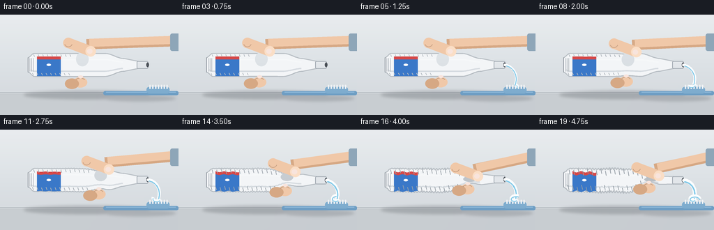
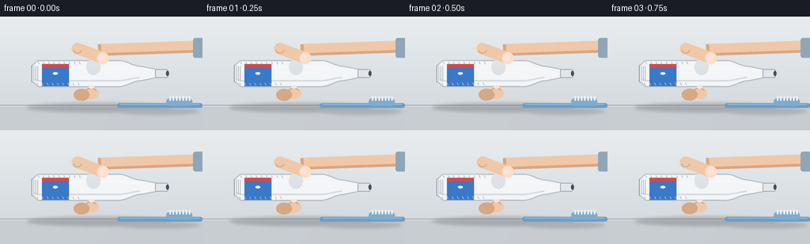

CODING AGENTS AS PIXEL WORLD MODELS
traex/Seed-2.1-Pro-0915 · phygen_014
点击播放 · 原生 RGB 像素
逐轮保存的候选
回放视频、检查图与代码变化。
每份候选均可单独播放。实际图片检查记录在下方工具轨迹中。
候选 01播放与检查图
点击播放 · 原生 RGB 像素


展开代码变化
--- 上一保存版本
+++ 本次保存版本
@@ -0,0 +1,333 @@
+"""Timelapse: a hand squeezing an open toothpaste tube with rapidly intensifying pressure.
+
+Pure procedural rendering with PIL/numpy at 4x supersampling, downscaled to 256x144.
+Run: python3 generate.py
+"""
+import math
+import numpy as np
+from PIL import Image, ImageDraw, ImageFilter
+
+import artifact_io
+
+W, H, N, FPS = 256, 144, 20, 4.0
+SS = 4
+SW, SH = W * SS, H * SS
+
+# Scene geometry (final-pixel coordinates; multiplied by SS when drawing)
+AXIS_Y = 72.0
+TAIL_X = 40.0 # crimped sealed end
+SHOULDER_X = 178.0 # body -> shoulder
+NECK_X = 198.0
+TIP_X = 211.0 # open nozzle tip
+BASE_HW = 16.5 # body half width
+
+
+def smoothstep(a, b, x):
+ u = np.clip((x - a) / (b - a), 0.0, 1.0)
+ return u * u * (3.0 - 2.0 * u)
+
+
+def grip_x(t):
+ # Grip travels from mid-tube toward the nozzle as the squeeze intensifies.
+ return 118.0 + 47.0 * smoothstep(0.08, 1.0, t)
+
+
+def pressure(t):
+ # Ease-in strongly: pressure intensifies rapidly over time.
+ s = smoothstep(0.10, 1.0, t)
+ return s * s
+
+
+def half_width(x, t):
+ """Tube body half width at station x, including pinch and crumpling."""
+ gx, p = grip_x(t), pressure(t)
+ # gentle taper into the shoulder
+ taper = 1.0 - 0.45 * smoothstep(150.0, SHOULDER_X, x)
+ hw = BASE_HW * taper
+ # sealed crimp tail is flatter
+ crimp = 0.62 + 0.38 * smoothstep(TAIL_X, TAIL_X + 9.0, x)
+ hw *= crimp
+ # finger pinch: deep local constriction
+ sigma = 10.0
+ pinch = 0.82 * p * math.exp(-((x - gx) ** 2) / (2 * sigma * sigma))
+ hw *= 1.0 - pinch
+ # accordion crumpling of the material already squeezed (behind the grip)
+ behind = 1.0 - smoothstep(gx - 4.0, gx + 3.0, x)
+ hw += 1.6 * p * behind * math.sin(x * 1.55 + 0.7)
+ return max(hw, 2.4)
+
+
+def center_y(x, t):
+ p = pressure(t)
+ tremble = 0.9 * p * math.sin(t * 26.0 + x * 0.15)
+ bend = 2.2 * p * math.sin(math.pi * np.clip((x - TAIL_X) / (SHOULDER_X - TAIL_X), 0, 1))
+ return AXIS_Y + bend * 0.4 + tremble * smoothstep(TAIL_X, SHOULDER_X, x)
+
+
+def spts(points):
+ return [(x * SS, y * SS) for x, y in points]
+
+
+def layer():
+ img = Image.new("RGBA", (SW, SH), (0, 0, 0, 0))
+ return img, ImageDraw.Draw(img)
+
+
+def composite(base, ov):
+ base.alpha_composite(ov)
+
+
+def make_background():
+ top = np.array([231, 235, 238], dtype=float)
+ bot = np.array([206, 212, 217], dtype=float)
+ grad = np.zeros((H, W, 3), dtype=float)
+ for y in range(H):
+ grad[y, :, :] = top * (1 - y / H) + bot * (y / H)
+ img = Image.fromarray(grad.astype(np.uint8)).resize((SW, SH), Image.BICUBIC).convert("RGBA")
+ d = ImageDraw.Draw(img)
+ # counter top
+ d.rectangle([0, 112 * SS, SW, SH], fill=(196, 201, 206, 255))
+ d.line([0, 112 * SS, SW, 112 * SS], fill=(150, 157, 164, 255), width=SS)
+ d.line([0, 113 * SS, SW, 113 * SS], fill=(222, 226, 229, 255), width=SS)
+ # soft light from upper left
+ glow = Image.new("L", (SW, SH), 0)
+ gd = ImageDraw.Draw(glow)
+ gd.ellipse([-200 * SS, -260 * SS, 320 * SS, 200 * SS], fill=70)
+ glow = glow.filter(ImageFilter.GaussianBlur(60 * SS))
+ white = Image.new("RGBA", (SW, SH), (255, 255, 255, 60))
+ img = Image.composite(Image.alpha_composite(img, white), img, glow)
+ return img
+
+
+def draw_shadow(base, t):
+ ov, d = layer()
+ p = pressure(t)
+ d.ellipse(spts([(34, 109), (214, 121)]), fill=(40, 46, 52, 55))
+ d.ellipse(spts([(150, 116 - p), (252, 124)]), fill=(40, 46, 52, 45))
+ ov = ov.filter(ImageFilter.GaussianBlur(2 * SS))
+ composite(base, ov)
+
+
+def draw_toothbrush(base, t):
+ ov, d = layer()
+ # handle
+ d.rounded_rectangle(spts([(148, 109.5), (256, 115.5)]), radius=3 * SS,
+ fill=(110, 158, 196, 255))
+ d.line(spts([(152, 111), (252, 111)]), fill=(150, 192, 224, 255), width=SS)
+ # head
+ d.rounded_rectangle(spts([(210, 103.5), (243, 113)]), radius=4 * SS,
+ fill=(126, 172, 206, 255))
+ # bristles
+ for i in range(7):
+ x = 214 + i * 4.1
+ d.rounded_rectangle(spts([(x, 100.5), (x + 2.0, 106.5)]), radius=SS,
+ fill=(238, 241, 244, 255))
+ composite(base, ov)
+
+
+def tube_outline(t):
+ xs = np.linspace(TAIL_X, SHOULDER_X, 70)
+ top, bot = [], []
+ for x in xs:
+ c = center_y(x, t)
+ hw = half_width(x, t)
+ top.append((x, c - hw))
+ bot.append((x, c + hw))
+ cy = center_y(SHOULDER_X, t)
+ # shoulder taper into the neck/nozzle
+ top += [(NECK_X, cy - 5.2), (TIP_X, cy - 4.6)]
+ bot += [(NECK_X, cy + 5.2), (TIP_X, cy + 4.6)]
+ return top, bot
+
+
+def draw_tube(base, t):
+ ov, d = layer()
+ top, bot = tube_outline(t)
+ p = pressure(t)
+ gx = grip_x(t)
+ poly = spts(top + bot[::-1])
+ d.polygon(poly, fill=(243, 245, 247, 255))
+ # body shading: edge shadows
+ edge = Image.new("RGBA", (SW, SH), (0, 0, 0, 0))
+ ed = ImageDraw.Draw(edge)
+ ed.line(spts(top), fill=(150, 158, 166, 150), width=max(SS, int(1.6 * SS)))
+ ed.line(spts(bot), fill=(150, 158, 166, 150), width=max(SS, int(1.6 * SS)))
+ composite(ov, edge)
+ # central glossy highlight
+ hs = [(x, center_y(x, t) - half_width(x, t) * 0.45)
+ for x in np.linspace(TAIL_X + 4, SHOULDER_X - 2, 60)]
+ d.line(spts(hs), fill=(255, 255, 255, 190), width=max(SS, int(2.2 * SS)))
+ hs2 = [(x, center_y(x, t) + half_width(x, t) * 0.55)
+ for x in np.linspace(TAIL_X + 4, SHOULDER_X - 2, 60)]
+ d.line(spts(hs2), fill=(205, 211, 217, 90), width=max(SS, int(2.0 * SS)))
+
+ # label band (red / blue stripes with geometric mark)
+ l0, l1 = TAIL_X + 13, TAIL_X + 47
+ band_top, band_bot = [], []
+ for x in np.linspace(l0, l1, 12):
+ c = center_y(x, t)
+ hw = half_width(x, t)
+ band_top.append((x, c - hw * 0.72))
+ band_bot.append((x, c + hw * 0.72))
+ d.polygon(spts(band_top + band_bot[::-1]), fill=(214, 73, 73, 255))
+ stripe_t = [(x, y + 4.2) for x, y in band_top]
+ stripe_b = [(x, y + 4.2) for x, y in band_bot]
+ d.polygon(spts(stripe_t + stripe_b[::-1]), fill=(58, 120, 200, 255))
+ # little white tooth mark on the label
+ mx = (l0 + l1) / 2
+ mc = center_y(mx, t)
+ d.ellipse(spts([(mx - 3.2, mc - 1.6), (mx + 3.2, mc + 1.6)]), fill=(255, 255, 255, 235))
+
+ # crimped sealed tail with ridges
+ d.line(spts([(TAIL_X, center_y(TAIL_X, t) - 10.5),
+ (TAIL_X, center_y(TAIL_X, t) + 10.5)]),
+ fill=(138, 146, 154, 255), width=SS)
+ for k in range(3):
+ x = TAIL_X + 2.5 + k * 2.6
+ d.line(spts([(x, center_y(x, t) - 9.5), (x, center_y(x, t) + 9.5)]),
+ fill=(170, 177, 184, 200), width=SS)
+
+ # accordion wrinkles behind the traveling grip
+ behind = np.clip((gx - 8) - (TAIL_X + 6), 0, None)
+ n_wr = int(behind / 6.5)
+ for k in range(n_wr):
+ x = TAIL_X + 8 + k * 6.5
+ if x > gx - 7:
+ break
+ c = center_y(x, t)
+ hw = half_width(x, t)
+ amp = 3.0 + 3.5 * p
+ col = (128, 137, 146, int(110 + 90 * p))
+ d.line(spts([(x, c - hw + 1.5), (x + 1.4, c - hw + 1.5 + amp)]),
+ fill=col, width=SS)
+ d.line(spts([(x, c + hw - 1.5), (x - 1.4, c + hw - 1.5 - amp)]),
+ fill=col, width=SS)
+
+ # contact shadow where the thumb presses
+ d.ellipse(spts([(gx - 9, center_y(gx, t) - half_width(gx, t) - 2),
+ (gx + 9, center_y(gx, t) + 2)]),
+ fill=(90, 98, 106, int(70 * p)))
+
+ # neck + open nozzle
+ cy = center_y(SHOULDER_X, t)
+ d.rounded_rectangle(spts([(NECK_X - 2, cy - 5.6), (TIP_X + 1.5, cy + 5.6)]),
+ radius=2 * SS, fill=(226, 230, 234, 255),
+ outline=(158, 166, 174, 255), width=SS)
+ # dark open rim
+ d.ellipse(spts([(TIP_X - 1.2, cy - 3.4), (TIP_X + 2.6, cy + 3.4)]),
+ fill=(74, 80, 87, 255))
+ composite(base, ov)
+
+
+SKIN = (240, 200, 168, 255)
+SKIN_HI = (250, 222, 198, 255)
+SKIN_SH = (214, 168, 132, 255)
+NAIL = (248, 228, 220, 255)
+
+
+def draw_hand(base, t):
+ ov, d = layer()
+ p = pressure(t)
+ gx = grip_x(t)
+ cy = center_y(gx, t)
+ hw = half_width(gx, t)
+ top_y, bot_y = cy - hw, cy + hw
+ tremble = 1.1 * p * math.sin(t * 24.0)
+
+ # forearm entering from the upper right, with a sleeve cuff
+ d.line(spts([(256, 38), (gx + 6, top_y - 13 + tremble)]),
+ fill=SKIN_SH, width=int(15 * SS))
+ d.line(spts([(256, 36), (gx + 10, top_y - 15 + tremble)]),
+ fill=SKIN, width=int(12 * SS))
+ d.rounded_rectangle(spts([(244, 27), (258, 52)]), radius=3 * SS,
+ fill=(142, 166, 184, 255))
+
+ # two finger pads wrapping under the tube
+ for fx, ry, col in [(gx - 3, 8.5, SKIN), (gx - 15, 10.5, SKIN_SH)]:
+ d.ellipse(spts([(fx - 10, bot_y + ry - 7.5), (fx + 10, bot_y + ry + 7.5)]),
+ fill=col)
+ # knuckle crease on the lower fingers
+ d.arc(spts([(gx - 10, bot_y + 2), (gx + 4, bot_y + 11)]),
+ start=200, end=340, fill=(186, 140, 106, 200), width=SS)
+ # fingernail peeking over the lower edge
+ d.ellipse(spts([(gx - 6, bot_y - 1.5), (gx + 1, bot_y + 2.8)]), fill=NAIL)
+
+ # thumb pressing from above: capsule angled down-left onto the tube
+ a = (gx + 12, top_y - 3 + tremble)
+ b = (gx - 20, top_y - 15 + tremble)
+ d.line(spts([a, b]), fill=SKIN, width=int(15 * SS), joint="curve")
+ d.ellipse(spts([(b[0] - 7.5, b[1] - 7.5), (b[0] + 7.5, b[1] + 7.5)]), fill=SKIN)
+ d.ellipse(spts([(a[0] - 7.5, a[1] - 7.5), (a[0] + 7.5, a[1] + 7.5)]), fill=SKIN_HI)
+ # thumb nail
+ d.ellipse(spts([(a[0] - 5.2, a[1] - 3.6), (a[0] + 2.6, a[1] + 3.6)]), fill=NAIL)
+ d.arc(spts([(b[0] - 6, b[1] - 6), (b[0] + 6, b[1] + 6)]),
+ start=20, end=160, fill=(196, 150, 116, 220), width=SS)
+ composite(base, ov)
+
+
+def cubic(p0, p1, p2, p3, u):
+ u2, u3 = u * u, u * u * u
+ x = (1 - u) ** 3 * p0[0] + 3 * (1 - u) ** 2 * u * p1[0] + 3 * (1 - u) * u2 * p2[0] + u3 * p3[0]
+ y = (1 - u) ** 3 * p0[1] + 3 * (1 - u) ** 2 * u * p1[1] + 3 * (1 - u) * u2 * p2[1] + u3 * p3[1]
+ return x, y
+
+
+def draw_paste(base, t):
+ amount = np.clip((t - 0.18) / 0.82, 0, 1) ** 0.85
+ if amount <= 0:
+ return
+ ov, d = layer()
+ cy = center_y(SHOULDER_X, t)
+ p0 = (TIP_X + 1.0, cy)
+ wob = math.sin(t * 18.0) * 1.2 * amount
+ p1 = (TIP_X + 14, cy + 2 + wob)
+ p2 = (232, 88 + wob)
+ p3 = (226.5, 100.5)
+ width = 3.2 + 2.6 * amount # ribbon thickens as pressure grows
+
+ us = np.linspace(0, 1, 26)
+ pts = [cubic(p0, p1, p2, p3, u) for u in us]
+ # white ribbon core with a cyan stripe (classic striped toothpaste)
+ d.line(spts(pts), fill=(252, 253, 254, 255), width=max(SS, int(width * SS)), joint="curve")
+ stripe = [(x, y + width * 0.32) for x, y in pts]
+ d.line(spts(stripe), fill=(126, 200, 232, 255), width=max(SS, int(width * 0.36 * SS)), joint="curve")
+
+ # paste accumulating on the brush head: growing one-turn coil
+ cx, cyy = 227.0, 101.0
+ turns = 0.9 * amount
+ nseg = max(2, int(28 * amount))
+ coil = []
+ for k in range(nseg + 1):
+ u = k / nseg
+ ang = u * turns * 2 * math.pi + 0.6
+ r = 2.0 + 6.5 * u
+ coil.append((cx + r * math.cos(ang), cyy - 1.5 + r * math.sin(ang) * 0.62))
+ d.line(spts(coil), fill=(252, 253, 254, 255), width=max(SS, int(width * 0.9 * SS)), joint="curve")
+ cstripe = [(x, y + 1.4) for x, y in coil]
+ d.line(spts(cstripe), fill=(126, 200, 232, 230), width=max(SS, int(width * 0.3 * SS)), joint="curve")
+ # blob at the nozzle rim
+ d.ellipse(spts([(p0[0] - 1.6, p0[1] - 1.6), (p0[0] + 2.2, p0[1] + 2.2)]),
+ fill=(252, 253, 254, 255))
+ composite(base, ov)
+
+
+def render_frame(i):
+ t = i / (N - 1)
+ base = make_background()
+ draw_shadow(base, t)
+ draw_toothbrush(base, t)
+ draw_tube(base, t)
+ draw_paste(base, t)
+ draw_hand(base, t)
+ rgb = base.convert("RGB").resize((W, H), Image.LANCZOS)
+ return np.asarray(rgb, dtype=np.uint8)
+
+
+def main():
+ frames = np.stack([render_frame(i) for i in range(N)], axis=0)
+ artifact_io.save(frames, ".")
+ print(f"saved {N} frames {W}x{H} at {FPS} fps")
+
+
+if __name__ == "__main__":
+ main()
可观测工具轨迹
实际执行的命令与返回图片。
命令 1exit 0
/bin/bash -lc 'cat prompt.txt GENERATION_RULES.md task_spec.json'
命令 2exit 0
/bin/bash -lc 'ls -la; find . -name "artifact_io*" 2>/dev/null; python3 -c "import artifact_io; print(artifact_io.__file__)" 2>&1 | head -5'
命令 3exit 0
/bin/bash -lc 'cat artifact_io.py'
命令 4exit 0
/bin/bash -lc 'head -30 player_template.html; python3 -c "import PIL, numpy; print(PIL.__version__, numpy.__version__)"'
命令 5exit 1
/bin/bash -lc 'cd . && time python3 generate.py'
命令 6exit 0
/bin/bash -lc 'cd . && time python3 generate.py && ls -la frames | head -8 && ls -la'
命令 7exit 1
/bin/bash -lc "cd . && python3 - <<'EOF'
import numpy as np
from PIL import Image
d = np.load(\"pixels.npz\")
p = d[\"pixels\"] # H,W,N packed
H,W,N = p.shape
frames = np.stack([((p[...,i]>>16)&255), ((p[...,i]>>8)&255), (p[...,i]&255)], axis=-1).astype(np.uint8)
print(\"shape\", frames.shape, \"range\", frames.min(), frames.max())
# inter-frame motion
for i in range(1,N):
diff = np.abs(frames[i].astype(int)-frames[i-1].astype(int)).mean()
print(f\"d{i-1:02d}->{i:02d} meanAbsDiff={diff:.2f}\")
# check distinct palette regions in frame 19
f = frames[19]
def region(x0,y0,x1,y1): return f[y0:y1,x0:x1].reshape(-1,3].mean(0)
print(\"bg\", region(5,5,40,30))
print(\"tube body\", region(120,60,150,66))
print(\"nozzle\", region(205,68,212,76))
print(\"hand/thumb area\", region(140,35,170,50))
print(\"brush head\", region(225,100,240,110))
EOF"命令 8exit 1
/bin/bash -lc "cd . && python3 - <<'EOF'
import numpy as np
d = np.load(\"pixels.npz\")
p = d[\"pixels\"]
H,W,N = p.shape
frames = np.stack([((p[...,i]>>16)&255), ((p[...,i]>>8)&255), (p[...,i]&255)], axis=-1).astype(np.uint8)
print(\"shape\", frames.shape, \"range\", frames.min(), frames.max())
for i in range(1,N):
diff = np.abs(frames[i].astype(int)-frames[i-1].astype(int)).mean()
print(f\"d{i-1:02d}->{i:02d} meanAbsDiff={diff:.2f}\")
f = frames[19]
def region(x0,y0,x1,y1): return f[y0:y1,x0:x1].reshape(-1,3).mean(0)
print(\"bg\", region(5,5,40,30).round(1))
print(\"tube body\", region(120,60,150,66).round(1))
print(\"nozzle\", region(205,68,212,76).round(1))
print(\"thumb area\", region(140,35,170,50).round(1))
print(\"brush head\", region(225,100,240,110).round(1))
# where is the pinch (skin-colored pixels) per frame: mean x of skin-ish pixels
for i in [0,4,8,12,16,19]:
fi = frames[i].astype(int)
r,g,b = fi[...,0],fi[...,1],fi[...,2]
skin = (r>205)&(g>150)&(g<230)&(b<190)&(r-g>18)
ys,xs = np.where(skin)
print(\"frame\",i,\"skin px\",skin.sum(),\"mean x\",round(xs.mean(),1) if len(xs) else None)
EOF"命令 9exit 0
/bin/bash -lc "cd . && python3 --version && python3 - <<'EOF'
import numpy as np
d = np.load(\"pixels.npz\")
p = d[\"pixels\"]
H, W, N = p.shape
r_ch = (p >> 16) & 255
g_ch = (p >> 8) & 255
b_ch = p & 255
frames = np.stack([r_ch, g_ch, b_ch], axis=-1).astype(np.uint8)
print(\"shape\", frames.shape, \"range\", frames.min(), frames.max())
for k in range(1, N):
diff = np.abs(frames[k].astype(int) - frames[k-1].astype(int)).mean()
print(\"diff %02d->%02d: %.2f\" % (k-1, k, diff))
f = frames[19]
def region(x0, y0, x1, y1):
return f[y0:y1, x0:x1].reshape(-1, 3).mean(0)
print(\"bg\", region(5, 5, 40, 30).round(1))
print(\"tube body\", region(120, 60, 150, 66).round(1))
print(\"nozzle\", region(205, 68, 212, 76).round(1))
print(\"thumb area\", region(140, 35, 170, 50).round(1))
print(\"brush head\", region(225, 100, 240, 110).round(1))
for k in [0, 4, 8, 12, 16, 19]:
fi = frames[k].astype(int)
rr, gg, bb = fi[..., 0], fi[..., 1], fi[..., 2]
skin = (rr > 205) & (gg > 150) & (gg < 230) & (bb < 190) & (rr - gg > 18)
ys, xs = np.where(skin)
mx = round(float(xs.mean()), 1) if len(xs) else None
print(\"frame\", k, \"skin px\", int(skin.sum()), \"mean x\", mx)
EOF"保存候选 1 份；完成命令 9 次；可验证图片返回 0 张。原始 API 响应与完整日志保留在本地。